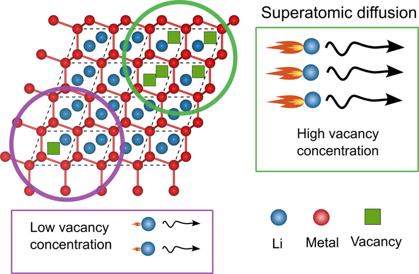
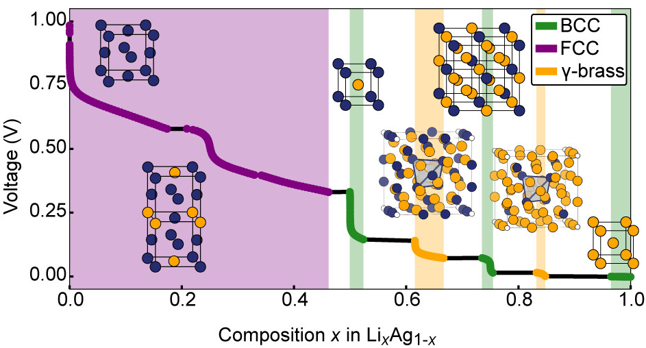

Overview#
CASM (Clusters Approach to Statistical Mechanics) is an open source software suite designed to perform first-principles statistical mechanical studies of multi-component crystalline solids. CASM interfaces with first-principles electronic structure codes, automates the construction and parameterization of effective Hamiltonians and subsequently builds highly optimized (kinetic) Monte Carlo codes to predict finite-temperature thermodynamic and kinetic properties. CASM uses group theoretic techniques that take full advantage of crystal symmetry in order to rigorously construct effective Hamiltonians for almost arbitrary degrees of freedom in crystalline solids. This includes cluster expansions for configurational disorder in multi-component solids and lattice-dynamical effective Hamiltonians for vibrational degrees of freedom involved in structural phase transitions.
To read more about CASM, or to cite it in a publication, please see the Citing CASM page.
Recent publications using CASM#

Abstract: Anode-free solid-state Li batteries promise significant increases in energy densities compared to current commercial batteries that rely on liquid electrolytes. Major challenges persist in controlling morphological evolution during the plating and stripping of lithium metal at the anode current collector. Elemental additives that alloy with lithium have been found to modify the plating and stripping behavior of lithium. Many alloying elements form intermetallics with lithium and the mobility of Li through these intermetallics is believed to have an important effect on morphological evolution. This study shows that Li transport coefficients through intermetallics span a wide range in values, with the B32 LiAl intermetallic predicted to have a Li tracer diffusion coefficient as high as \(10^{–6}\) \(\mathrm{cm}^{2}/\mathrm{s}\) at room temperature, which is 8 orders of magnitude larger than that of isostructural B32 LiZn. This work demonstrates the crucial role of vacancy concentration in controlling the mobility of Li atoms through intermetallics. While the migration barriers for Li-vacancy exchanges in both LiAl and LiZn are remarkably low, the superatomic conductivity in LiAl is shown to arise from the unique electronic structure of the B32 LiAl compound, which favors high concentrations of vacancies.
Methods Used: Structure enumeration, Cluster expansion, Metropolis Monte Carlo simulations, Kinetic Monte Carlo simulations

Abstract: A carbon-silver anode has recently been shown to suppress dendrite formation in all-solid-state lithium-ion batteries. The role that silver plays in enabling the reversible deposition and stripping of lithium remains unknown. Furthermore, very little is known about the thermodynamic and kinetic properties of LixAg1-x alloys. Here, we report on an in-depth first-principles study of phase stability and diffusion mechanisms in the Li-Ag alloy system. We identify two new intermetallic phases that are predicted to be stable in Li-rich LixAg1-x alloys with stoichiometries of Li3Ag and Li11Ag2. Our calculations show that the peculiar and highly anharmonic energy surface of pure Li along the Bain and Burgers paths persists upon the addition of Ag to BCC Li. This has important implications for room-temperature phase stability and mechanical properties. We have also performed a systematic study of diffusion mechanisms in the LixAg1-x alloy system as a function of alloy concentration x. Diffusion in alloys and intermetallics is mediated by vacancies. High vacancy formation energies are predicted in the LixAg1-x alloy, especially in Ag-rich FCC solid solutions. Complex diffusion mechanisms are identified in the B2 and \(\gamma\)-brass intermetallic phases that include two-atom hops and second-nearest neighbor hops. The migration barriers are found to decrease with increasing Li concentration, with predictions of exceptionally low migration barriers of 0.1 eV in the D03 Li3Ag phase.
Methods Used: Structure enumeration, Cluster expansion, Metropolis Monte Carlo simulations
Getting help#
To request features or report bugs, please go to the GitHub repositories for individual CASM packages.